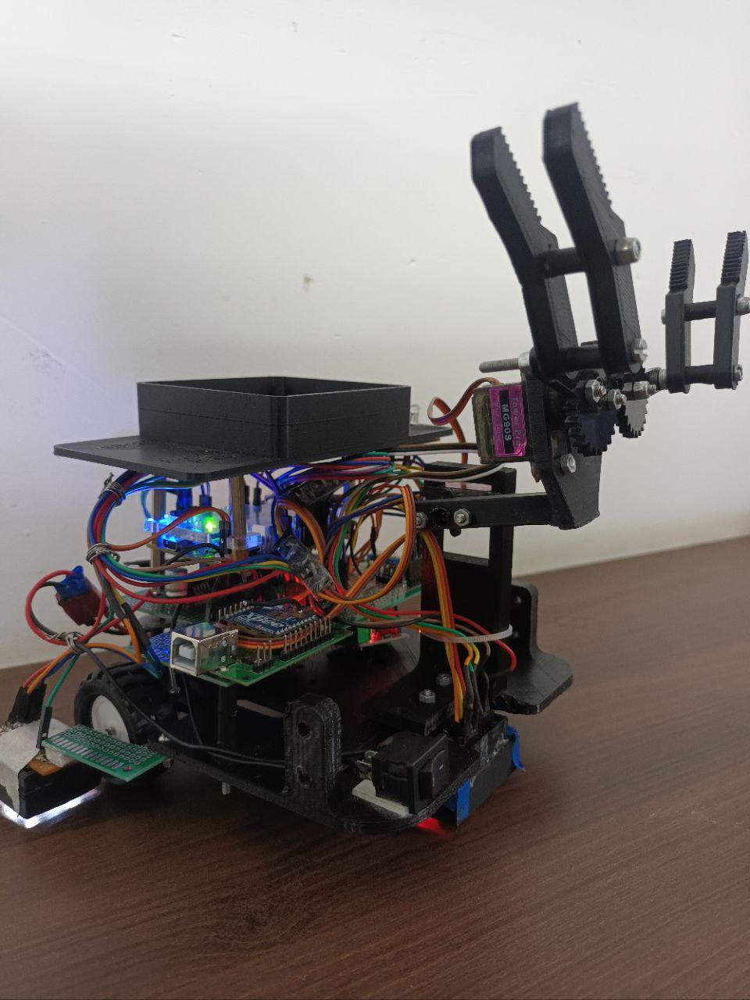
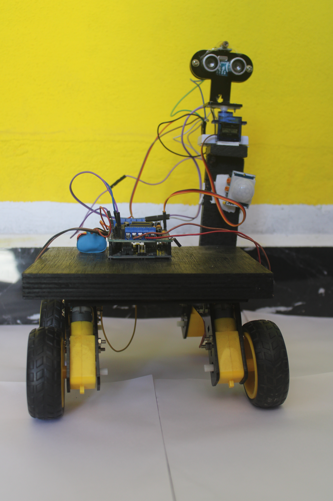
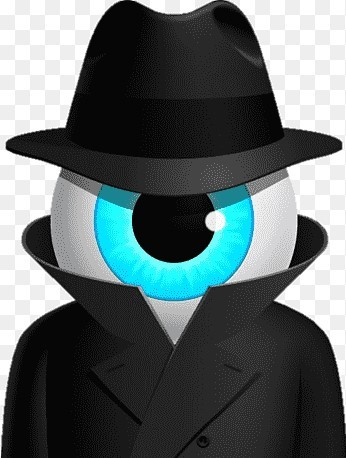

E yantra
IIT bombay robotics competition.

Smart security bot
Unacademy robotics national level robotics competition.

Third Eye
Engineering semister mini project.

Smart security camera
Engineering semister mini project.